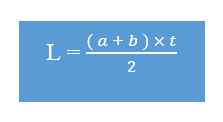
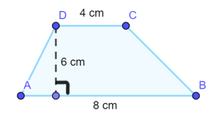
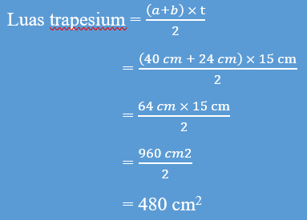

Alhamdulillah, segala puji dan syukur penulis panjatkan kehadirat Allah SWT karena buku ini telah selesai disusun. Buku Bangun Datar ini penulis sajikan dengan memperhatikan kemampuan dan kebutuhan belajar kamu. Materi pada buku ini penulis sajikan pula dengan bahasa yang sederhana dan mudah dipahami. Untuk mendukung pembelajaran buku ini juga dilengkapi dengan ilustrasi-ilustrasi yang akan membantu kamu dalam memahami materi bangun datar.
Buku ini disusun agar dapat membantu para siswa/siswi dalam mempelajari konsep-konsep bangun datar beserta mempermudah mempelajari materi bangun datar. Setiap materi dilengkapi dengan contoh soal, latihan soal, dan evaluasi yang akan membantu kamu dalam bangun datar.
Penulis pun menyadari jika didalam penyusunan buku ini mempunyai kekurangan, namun penulis meyakini sepenuhnya bahwa sekecil apapun buku ini tetap akan memberikan sebuah manfaat bagi pembaca.
Akhir kata untuk penyempurnaan buku ini, maka kritik dan saran dari pembaca sangatlah berguna untuk penulis kedepannya.
Cilegon, Maret 2022
Penulis
Bangun datar merupakan suatu bidang datar yang dibatasi oleh garis-garis lurus atau garis lengkung. Atau lebih tepatnya suatu bangun yang memiliki bidang rata serta mempunyai dua dimensi. Yakni panjang dan lebar namun tidak mempunyai tinggi atau ketebalan. Dengan begitu, pengertian singkatnya dari bangun datar adalah abstrak
Matematika adalah salah satu pelajaran yang membutuhkan ketelitian dan pemahaman lebih dalam pembelajarannya, maupun itu di tingkat SD, SMP, SMA, dan Perguruan tinggi. Materi yang dipelajari disetiap jenjang sekolah sangat penting, apalagi pembelajaran matematika sekolah dasar, matematika sekolah dasar ini merupakan awal dari perhitungan-perhitungan yang dimana akan terus berkembang ke jenjang yang lebih sulit. Maka dari itu pembelajaran matematika di sekolah dasar harus dipahami, agar selanjutnya tidak sulit untuk mengerjakan soal-soal yang lebih rumit karena sudah mengerti dan dipelajari dasar-dasar nya di sekolah dasar.
Tidak sedikit siswa/siswi di sekolah dasar yang mengalami kesulitan dalam belajar matematika. Hal ini terjadi karena guru yang menjelaskan terlalu cepat atau materi itu sendiri yang memang agak rumit untuk dipahami. Contohnya pada materi Bangun Datar, banyak siswa/siswi yang mengalami kesulitan dalam menentukan luas bangun datar dan membedakan sifat-sifat bangun datar. Alasan kesulitan belajar matematika (bangun datar) pada sekolah dasar, meliputi: rumusnya sering tertukar, konseptual siswa masih merasa kesulitan sehingga terdapat kesalahan dalam meneliti soal cerita karena kesulitan dan tidak memahami konsepnya, masih bingung penerapan rumus luas dan keliling, dan lain-lain.
Suatu cara yang bisa di gunakan guru dalam mengatasi kesulitan belajar matematika, khususnya pada materi bangun datar untuk mempelajari konsep, prinsip, dan keterampilan adalah masalah dihubungkan dengan pengalaman sehari-hari siswa, guru melibatkan siswa dalam membuat generalisasi, guru dalam menjelaskan konsep-konsep matematika kepada siswa menggunakan bahasa yang sederhana, dan gunakan alat peraga bila diperlukan. Sedangkan, sebagai siswa/siswi cara untuk mengatasi kesulitan belajar matematika yaitu mendengarkan guru ketika sedang menjelaskan, membaca ulang materi yang sudah dijelaskan, dan kerjakan soal-soal latihan.
Contoh:

Panjang dan lebar pada persegi disebut sisi (s). Pada gambar di atas, setiap sisi terdiri atas 6 satuan.
Maka, keliling persegi = 6 + 6 + 6 + 6
= 24 satuan
= s + s + s + s
= 4 × s
Contoh:

Keliling persegi = 6 + 6 + 6 + 6 = 24
= s + s + s + s
Jadi, keliling persegi adalah 24 cm.
| Rumus keliling persegi (K) = 4 × s |
|---|

Luas persegi di samping adalah 9 satuan persegi.
Diperoleh dari = 3 satuan × 3 satuan
= 9 satuan
Luas persegi = sisi × sisi
= s × s
| Rumus luas persegi = s × s |
|---|


Karena ada kesamaan sifat dengan persegi panjang, maka persegi didefinisikan sebagai persegi panjang yang keempat sisinya sama Panjang.
Contoh:
Sapu tangan Rina memiliki Panjang sisi 25 cm. Berapa cm-kah keliling dan Berapa cm2-kah luasnya sapu tangan Rina?
Penyelesaian:
Keliling = 4 × s
= 4 × 25
= 100
Jadi, kelilingnya adalah 100 cm.
Luas = s × s
= 25 × 25
= 625
Jadi, luasnya adalah 625 cm2
| Rangkuman |
|---|
|
 |
Luas persegi di samping adalah ... cm2 |
|---|
Diketahui: Panjang sisi persegi (s) = 17 cm
Ditanya: Luas persegi?
Jawab:
L = s × s
= 17 × 17
=289
Jadi, luas persegi yang memiliki panjang sisi 17 cm adalah 289 cm2.
| |
Keliling persegi di samping adalah…cm |
|---|
Diketahui: Panjang sisi persegi (s) = 17 cm
Ditanya: Keliling persegi?
Jawab:
K = 4 × s
= 4 × 17
= 68
Jadi, keliling persegi yang memiliki panjang sisi 17 cm adalah 68 cm.

Jika masih belum mengerti cara menghitung keliling dan luas persegi, kalian bisa menonton video youtube dibawah ini.
Keliling persegi panjang merupakan jumlah dari keempat sisinya. Keliling persegi panjang dapat dihitung dengan satuan tak baku dan satuan baku.
Contoh:

Panjang (p) persegi panjang tersebut adalah 9 satuan. Lebar (l) persegi panjang tersebut adalah 6 satuan.
Maka, kelilingnya = 9 + 6 + 9 + 6 = 30 satuan
= (p + l) + (p + l)
= 2 × (p + l)
Jadi, keliling persegi panjang adalah 30 satuan.
Keliling persegi panjang = 9 + 6 + 9 + 6 = 30 cm
= p + l + p + l
= (p + l) + (p + l)
= 2 × (p + l)
Jadi, keliling persegi panjang adalah 30 cm.
| Rumus keliling persegi panjang (K) = 2 × (p + l) |
|---|

Contoh:
Luas daerah bidang datar adalah banyak persegi satuan yang menutupi bangun tersebut.
Menghitung banyak persegi satuan sama dengan menghitung luas bidang datar tersebut. Luas persegi panjang di atas adalah 15 satuan persegi.
Diperoleh dari = 5 satuan × 3 satuan
= 15 satuan
Luas persegi panjang = panjang × lebar = p × l.
| Rumus luas persegi panjang (L) = p × l |
|---|


Contoh:
Budi membuat potongan kertas berbentuk persegi panjang. Ukuran panjangnya 8 cm dan lebar 5 cm. Berapa cm-kah kelilingnya? Berapa cm2-kah luasnya?
Penyelesaian:
Keliling = 2 × (p + l)
= 2 × (8 + 5)
= 2 × 13
= 26
Jadi, kelilingnya adalah 26 cm.
= 8 × 5
= 40
Jadi, luasnya adalah 40 cm2.
| Rangkuman |
|---|
|
| Keliling bangun di samping adalah ... cm. |  |
|---|
Diketahui: p = 14 cm dan l = 9 cm
Ditanya: Keliling persegi panjang?
Jawab:
K = 2 × (p + l)
= 2 × (14 + 9)
= 2 × 23
= 46
Jadi, keliling persegi panjang tersebut adalah 46 cm.
| Luas bangun di samping adalah ... cm2. | |
|---|
Diketahui: p = 14 cm dan l = 9 cm
Ditanya: Luas persegi panjang?
Jawab:
L = p × l
= 14 × 9
= 126
Jadi, luas persegi panjang tersebut adalah 126 cm2.

Jika masih belum mengerti cara menghitung keliling dan luas persegi panjang, kalian bisa menonton video youtube dibawah ini.
Trapesium terbagi menjadi 3 jenis:
Trapesium sama kaki adalah trapesium yang memiliki kaki atau sisi trapesium yang tidak sejajar sama panjang. Sudut-sudut sisi sejajar (alas) pada trapesium sama kaki sama besar. Trapesium sama kaki memiliki simetri lipat dan kedua diagonalnya sama panjang.

Trapesium siku-siku adalah trapesium yang memiliki sepasang sudut siku-siku. Trapesium jenis ini juga bisa digunakan untuk memperkirakan luas daerah di bawah kurva.

Trapesium sembarang adalah ketika trapesium memiliki sisi dan sudut trapesium yang tidak sama, keempat sisinya memiliki panjang yang berbeda.

Perhatikan bagian-bagian trapesium berikut:


Keliling = panjang AB + panjang BC + panjang CD + panjang DA
K = sisi + sisi + sisi + sisi
K = a + b + c + d
Contoh:
Tentukan keliling trapesium berikut.

Jawab:
Diketahui: a = 9 cm, b = 15 cm, c = 4 cm, dan d = 15 cm
Keliling trapesium = a + b + c + d
= 9 + 15 + 4 + 15
= 43 cm
Jadi, keliling trapesium tersebut adalah 43 cm.
 |
 |
|---|
Contoh:
Hitunglah luas trapesium ABCD pada gambar berikut:
Jawab:
Diketahui: a = 8 cm, b = 4 cm, dan t = 6 cm

Jadi, luas trapesium ABCD adalah 36 cm2.
Budi mencat papan nama yang berbentuk trapesium. Panjang sisi papan nama yang sejajar 40 cm dan 24 cm. Tinggi trapesium 15 cm.
Hitunglah luas permukaan papan nama yang dicat!
Diketahui: a = 40 cm, b = 24 cm, dan t = 15 cm
Ditanya: luas permukaan papan nama yang di cat
Jawab:
Jadi, luas permukaan papan nama yang di cat oleh budi adalah 480 cm2.
| Rangkuman |
|---|
|
Diketahui: a = 15 cm, b = 10 cm, c = 10 cm, dan d = 8 cm
Ditanya: Keliling trapesium?
Jawab:
Keliling trapesium = a + b + c + d
= 15 + 10 + 10 + 8
= 43 cm
Jadi, keliling trapesium tersebut adalah 43 cm.
Ditanya: Luas Trapesium?
Jawab:

Jadi, luas trapesium tersebut adalah 28 cm2.

Jika masih belum mengerti cara menghitung keliling dan luas trapesium, kalian bisa menonton video youtube dibawah ini.
Perhatikan bagian layang-layang berikut.

Berikut bagian layang-layang.
Dari bagian-bagian tersebut dapat kita simpulkan bahwa Layang-layang merupakan segi empat yang dua pasang sisi berdekatan sama panjang.

Misalnya sisi AB = AD = a, kemudian sisi BC=CD= b. lalu keliling layang-layang menjadi
K = AB + BC CD + DA
= a + b + b + a
= 2a + 2b
= 2 (a + b)
Contoh:
Hitunglah keliling layang-layang dibawah ini!

Diketahui: d1= 24 cm, d2 = 40 cm, a = 13 cm, dan b = 37 cm
Ditanya: Keliling layang-layang?
Jawab:
Keliling layang-layang = 2 (a + b)
= 2 (13 + 37)
= 2 (50)
= 100 cm
Jadi, keliling layang-layang tersebut adalah 100 cm.
Luas layang-layang merupakan setengah dari perkalian diagonal-diagonalnya. Luas layang-layang dirumuskan:

Contoh:

Diketahui d1 = 12 cm dan d2 = 10 cm. Berapakah luas layang-layang tersebut?
Jawab:

Jadi, luas layang-layang tersebut adalah 60 cm2.
Yanto membuat layang-layang dari kertas dan bambu. Panjang bambu sebagai rangka layang-layang adalah 52 cm dan 42 cm. Rangka layang-layang tersebut ditutupi kertas. Berapa luas kertas yang diperlukan?
Diketahui: d1 = 52 cm dan d2 = 42 cm
Ditanya: luas kertas yang diperlukan?
Jawab:

Jadi, luas kertas yang diperlukan untuk menutupi kerangka layang-layang adalah 1092 cm2.
| Rangkuman |
|---|
|


Ditanya: Keliling layang-layang?
Jawab:
Keliling layang-layang = 2 (a + b)
= 2 (15 + 28)
= 86 cm
Jadi, keliling layang-layang tersebut adalah 86 cm.
Ditanya: Luas layang-layang?
Jawab:

Jadi, luas layang-layang tersebut adalah 90 cm2.
Evaluasi

Jika masih belum mengerti cara menghitung keliling dan luas trapesium, kalian bisa menonton video youtube dibawah ini.
Bangun datar : bangun yang dibuat pada permukaan datar.
Keliling : jumlah panjang sisi-sisi suatu bangun tertutup.
Luas : ukuran panjang lebarnya bidang (lapangan, ruangan).
Diagonal : suatu garis yang pergerakannya berawal dari sudut menyudut.
Sudut : bangun yang dibuat oleh dua garis yang berpotongan di sekitar titik potongnya.
Persegi : suatu segi empat dengan semua sisinya sama panjang dan semua sudut-sudutnya sama besar dan siku-siku.
Persegi Panjang : bangun datar dua dimensi yang dibentuk oleh dua pasang sisi yang masing-masing sama panjang dan sejajar dengan pasangannya, dan memiliki empat buah sudut yang kesemuanya adalah sudut siku-siku.
Trapesium : perpaduan antara segitiga dan persegi.
Layang-layang : bangun datar yang dibentuk oleh dua pasang sisi yang masing-masing pasangannya sama panjang dan saling membentuk sudut.
Sisi : suatu bidang yang membatasi bangun ruang dan sekitarnya.
Sejajar : sama derajat (tingkat dan sebagainya)
Garis berpotongan : kedudukan dua garis yang mempunyai titik potong karena kedua garis saling bertemu.
Panjang : dimensi suatu benda yang menyatakan jarak antar ujung.
Lebar : garis horizontal yang membentang lebih pendek dari pada panjang.
Tinggi : pengukuran secara vertikal dari sebuah objek.
Ika Aura Nurani merupakan seorang mahasiswa Pendidikan Matematika Angkatan 2021, di Universitas Sultan Ageng Tirtayasa (UNTIRTA). Nama panggilannya yaitu Ika. Seorang ika, menempuh Pendidikan dari PAUD Barokah, SDN Tegal Ratu, SMP Negeri 1 Kota Cilegon, dan SMA Negeri 1 Kota Cilegon.
Seorang Dosen dari Universitas Sultan Ageng Tirtayasa, Fakultas Keguruan dan Ilmu Pendidikan, Jurusan Pendidikan Matematika. Aan Hendrayana banyak sekali artikel yang dipublikasikan atau di buat beliau, contohnya yaitu Artikel Pengaruh pembelajaran pendekatan rigorous mathematical thinking (RMT) terhadap pemahaman konseptual matematis siswa SMP, Artikel Virtual Microscopic Simulation (VMS) to promote students' conceptual change: A case study of heat transfer, Artikel Pengembangan multimedia interaktif untuk meningkatkan kemampuan berpikir kritis dan kreatif siswa SMP dalam matematika, dan lain sebagainya. Kemampuan dan keahlian meliputi mengajar dan belajar, pedagogi dan Pendidikan, pengajaran, pelatihan guru, sedang belajar, E-learning, pembelajaran online, pembelajaran kolaboratif, dan pembelajaran yang ditingkatkan teknologi.